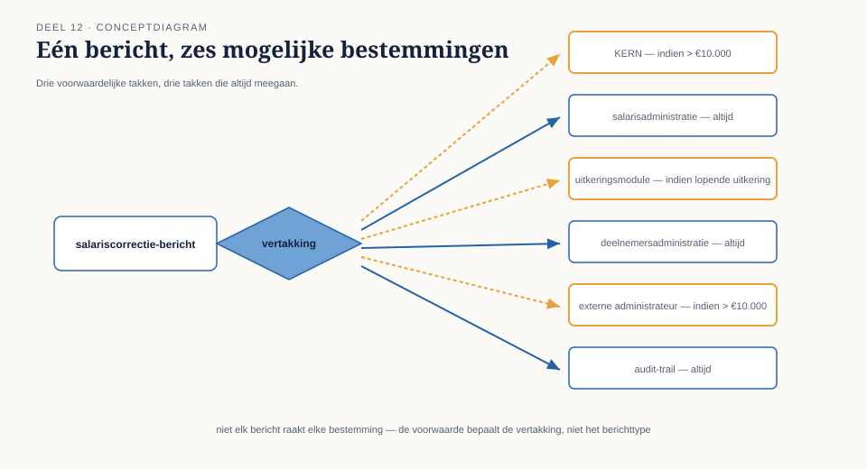
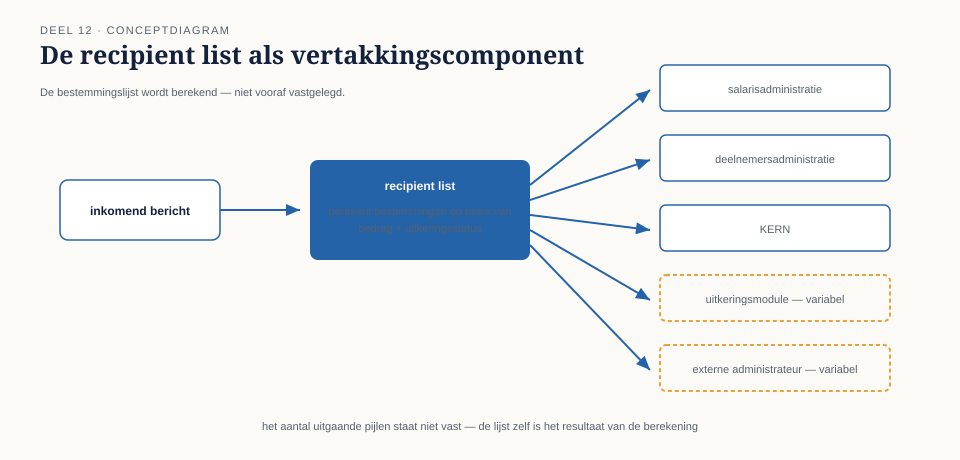

Met de broker-architectuur uit deel 11 op zijn plaats kreeg Caspar een routeringsvraag die de content-based router uit deel 4 niet kon beantwoorden. Een salariscorrectie boven een bepaalde drempel moest, bleek uit een nieuwe compliance-eis voor de Wtp-voorbereiding, niet alleen naar KERN voor verwerking, maar gelijktijdig naar: het interne controleteam, een externe accountant (alleen voor correcties boven €10.000), de risicomanagementafdeling, en — uitsluitend als de deelnemer een lopende uitkering had — ook naar de uitkeringsadministratie.
7secties
3figuren
12controlevragen
2kernzinnen
Niveau 2: ① Integratiearchitectuurstijlen: punt-tot-punt vs. broker vs. event backbone → ② Routing-patroonfamilie diepgaand: dynamic router, recipient list, splitter/aggregator (hier) → ③ Transformatie diepgaand: content enricher, content filter, claim check → ④ Endpoint-patronen: messaging gateway, messaging mapper, service activator → ⑤ Systeembeheerpatronen: control bus, wire tap, detour, message history, smart proxy → ⑥ Messaging-infrastructuur: broker-architecturen en exchange/queue-modellen → ⑦ Orkestratie versus choreografie → ⑧ Distributed transactions in async context: saga's en compenserende transacties → ⑨ Outbox-pattern en transactional messaging → ⑩ Contractbeheer voor asynchrone koppelingen → ⑪ Observability in ketens: distributed tracing, correlation, message history in productie → ⑫ Capstone: verdediging vanuit rollen — integratieontwerp voor het Mutatieplatform
12.0 Een salariscorrectie die naar zes bestemmingen tegelijk moest
Sectie 1 van 7
Met de broker-architectuur uit deel 11 op zijn plaats kreeg Caspar een routeringsvraag die de content-based router uit deel 4 niet kon beantwoorden. Een salariscorrectie boven een bepaalde drempel moest, bleek uit een nieuwe compliance-eis voor de Wtp-voorbereiding, niet alleen naar KERN voor verwerking, maar gelijktijdig naar: het interne controleteam, een externe accountant (alleen voor correcties boven €10.000), de risicomanagementafdeling, en — uitsluitend als de deelnemer een lopende uitkering had — ook naar de uitkeringsadministratie.
Dit is geen content-based router-probleem: de bestemmingen zijn niet één van meerdere vaste opties (zoals in deel 4: adreswijziging óf dienstverbandmutatie óf salariscorrectie), maar een variabele combinatie van meerdere, soms afhankelijk van meerdere criteria tegelijk. En het is ook geen publish-subscribe-vraagstuk uit deel 6, want niet elke geïnteresseerde partij is voor elk bericht evenzeer relevant — de externe accountant is bijvoorbeeld alleen relevant bóven €10.000, iets wat een gewoon abonnement niet kan uitdrukken.

Figuur 12-1 — Eén salariscorrectiebericht met een vertakking naar zes mogelijke bestemmingen, waarbij drie takken een voorwaarde tonen (">€10.000", "alleen bij lopende uitkering") en drie takken altijd actief zijn.
Dit deel behandelt drie patronen die dit soort samengestelde en dynamische routeringsvragen oplossen: de dynamic router, de recipient list, en het paar splitter/aggregator.
02
12.1 De dynamic router
Sectie 2 van 7
De content-based router uit deel 4 werkt met een vaste set regels: mutatietype X gaat naar kanaal Y, ingebouwd en te wijzigen alleen door de router zelf aan te passen. Een dynamic router verschilt hierin fundameneel: de routeringsregels worden niet in de router zelf vastgelegd, maar op een andere plek beheerd — bijvoorbeeld in een configuratietabel, een extern regelbestand, of een raadpleegbare service — en de router leest die regels bij elke beslissing opnieuw uit.
Het voordeel is niet snelheid of elegantie, maar wijzigbaarheid zonder hercompilatie of herimplementatie van de router zelf. Bij Meridiaan bleek dit relevant zodra de compliance-eis (welke drempel, welke bestemmingen) meermaals wijzigde tijdens de eerste maanden van de Wtp-voorbereiding — elke wijziging in de router zelf zou een releasecyclus hebben gevergd, terwijl een wijziging in de configuratietabel binnen een uur kon worden doorgevoerd door het compliance-team zelf, zonder ontwikkelaarsinzet.
Dit voordeel heeft een prijs die niet onderschat mag worden: een dynamic router is per definitie minder voorspelbaar op basis van de code alleen. Waar een content-based router zijn volledige gedrag toont in zijn eigen broncode, moet een dynamic router altijd samen met zijn actuele configuratie worden gelezen om te begrijpen wat hij op een gegeven moment doet. Dit vraagt aanvullende discipline: versiebeheer op de configuratie zelf, en — cruciaal, gezien deel 9 — dezelfde zichtbaarheidseisen als voor foutafhandeling: als een dynamic router een bericht routeert op basis van regels die niemand meer kan reconstrueren zoals ze een maand geleden waren, is een audit achteraf onmogelijk.
Kernzin 11 van de cursus: wijzigbaarheid zonder codewijziging is waardevol precies wanneer de regels vaker veranderen dan de code eromheen — en wordt een risico zodra niemand meer bijhoudt wat de regels op enig moment waren.
Uit Werkboek deel 12, Opdracht 12.1 — Content-based router, dynamic router, of recipient list?
Bepaal voor elk scenario welk patroon het beste past: de statische content-based router uit deel 4, een dynamic router, of een recipient list.
a. Mutaties worden naar drie vaste kanalen gerouteerd op basis van mutatietype, een indeling die al twee jaar ongewijzigd is.
b. Een salariscorrectie moet naar KERN, en gelijktijdig — afhankelijk van bedrag en uitkeringsstatus — naar nul tot drie aanvullende bestemmingen.
c. Het compliance-team wil zelf, zonder ontwikkelaarsinzet, kunnen aanpassen welke drempel geldt voor doorsturen naar de externe accountant.
→Uitwerking tonenToon
a. Content-based router (statisch), zoals in deel 4. De regels zijn stabiel; er is geen aantoonbare noodzaak voor de extra complexiteit van externe configuratie.
b. Recipient list. Meerdere, berekende bestemmingen tegelijk op basis van inhoud — het schoolvoorbeeld uit 12.0.
c. Dynamic router (of, specifieker hier, een dynamische component binnen de recipient list-berekening) — de eis is expliciet dat de regel wijzigbaar moet zijn zonder ontwikkelaarsinzet, wat vraagt om regels die extern beheerd worden.
Wat je hier moet meenemen: situatie c laat zien dat "dynamisch" niet alleen bij een enkelvoudige router hoort — hetzelfde principe (regels extern beheren in plaats van in code) is ook toepasbaar op de bestemmingslijstberekening van een recipient list. De twee patronen (dynamic router, recipient list) zijn onafhankelijke assen: één-bestemming-of-veel, en vast-of-wijzigbaar.
03
12.2 De recipient list
Sectie 3 van 7
Waar een content-based router (statisch of dynamisch) een bericht naar één bestemming uit meerdere mogelijke opties stuurt, stuurt een recipient list een bericht naar een berekende verzameling van bestemmingen tegelijk — precies het probleem van de salariscorrectie in 12.0.
De kern van een recipient list is een functie die, gegeven de inhoud van het bericht, de lijst van bestemmingen berekent. Voor de casus van 12.0 zou die functie er, informeel, zo uitzien:
Als bedrag > €10.000: voeg toe: externe accountant
Als deelnemer een lopende uitkering heeft: voeg toe: uitkeringsadministratie
Een recipient list moet, om houdbaar te blijven, aan een vergelijkbare eis voldoen als de content-based router uit deel 4: de berekening van de bestemmingslijst hoort declaratief en transparant te zijn, niet verstopt in een lange keten van imperatieve code. Bij Meridiaan is dit opgelost door de recipient list-logica in dezelfde configuratietabel als de dynamic router uit 12.1 onder te brengen, met dit verschil: waar de dynamic router één bestemming teruggeeft, geeft deze berekening een lijst terug.
Een essentieel verschil met eenvoudige publish-subscribe (deel 6): bij publish-subscribe bepaalt elke abonnee zelf, onafhankelijk, of hij een bericht relevant vindt — de zender weet niet eens hoeveel abonnees er zijn. Bij een recipient list bepaalt de zendende kant (of een component vlak na de zender) welke ontvangers relevant zijn, gebaseerd op de inhoud van dit specifieke bericht. Dit is een bewuste, expliciete beslissing per bericht, niet een impliciet abonnement. De keuze tussen beide hangt af van waar de kennis hoort te zitten: als de regel "wie is geïnteresseerd" logisch bij de boodschap zelf hoort (zoals hier: een compliance-eis die bepaalt wie een salariscorrectie moet zien), is een recipient list passender; als de regel logisch bij de ontvanger hoort ("ik wil alle mutatie-gebeurtenissen zien, ongeacht type"), is publish-subscribe passender.

Figuur 12-2 — De recipient list als vertakkingscomponent: één inkomend bericht, een berekeningsstap die de bestemmingslijst bepaalt op basis van bedrag en uitkeringsstatus, en een variabel aantal uitgaande pijlen.
Controlevraag — Opdracht 12.2 — Wijzigbaarheid tegen een prijs
Uit Werkboek deel 12, Opdracht 12.2 — Wijzigbaarheid tegen een prijs
Een dynamic router werd bij Meridiaan drie maanden na invoering geraadpleegd tijdens een audit: waarom was salariscorrectie X van vier maanden geleden niet naar de externe accountant gestuurd, terwijl het bedrag boven de huidige drempel van €10.000 lag?
a. Wat is de meest waarschijnlijke verklaring, gegeven dat de drempel meermaals is gewijzigd?
b. Wat had dit voorkomen?
→Uitwerking tonenToon
a. De meest waarschijnlijke verklaring is dat de drempel vier maanden geleden lager of hoger was dan de huidige €10.000 — het bericht is destijds correct gerouteerd volgens de op dát moment geldende regel, die inmiddels is gewijzigd. Zonder versiebeheer op de configuratie is dit niet meer te reconstrueren, en lijkt het bericht ten onrechte "verkeerd gerouteerd".
b. Versiebeheer op de configuratietabel zelf, met een tijdstempel per wijziging, zodat een audit achteraf kan vaststellen welke regel op het moment van routering daadwerkelijk gold — precies de eis die kernzin 11 stelt naast de wijzigbaarheid.
Wat je hier moet meenemen: de kracht van een dynamic router (snel wijzigbaar) is tegelijk de bron van dit risico (moeilijk te reconstrueren gedrag uit het verleden) — beide zijn onlosmakelijk verbonden, en de oplossing is niet "minder dynamisch maken" maar "de wijzigingen zelf ook auditeerbaar maken".
04
12.3 Splitter en aggregator: het omgekeerde probleem, en de terugkeer
Sectie 4 van 7
Niet elk routeringsvraagstuk gaat over "één bericht naar meerdere bestemmingen sturen". Soms is het omgekeerde nodig: één bericht bevat meerdere, zelfstandig te verwerken onderdelen, die elk apart door de keten moeten, waarna de resultaten weer moeten worden samengevoegd tot één antwoord.
Bij Meridiaan deed dit zich voor bij de jaarlijkse batchcorrectie: een werkgever levert één bestand aan met tweehonderd individuele salariscorrecties voor tweehonderd verschillende deelnemers. Deze moeten stuk voor stuk door dezelfde validatie- en verwerkingsketen als een individuele correctie (inclusief de recipient list uit 12.2, want ook een individuele correctie uit deze batch kan boven €10.000 uitkomen), maar de werkgever wil uiteindelijk één samengevat resultaat: hoeveel zijn er geslaagd, hoeveel gefaald, en waarom.
Een splitter breekt het ene binnenkomende bericht op in n afzonderlijke berichten — in dit geval tweehonderd individuele salariscorrectieberichten, elk met een eigen bericht-ID (deel 3, cruciaal voor idempotentie) en een gedeeld correlatiekenmerk dat aangeeft tot welke oorspronkelijke batch ze behoren. Elk van de tweehonderd doorloopt vervolgens zelfstandig de bestaande keten — dezelfde router, dezelfde translator, dezelfde recipient list als een individuele correctie, zonder dat die componenten ook maar hoeven te weten dat dit bericht uit een batch komt.
Een aggregator doet het omgekeerde: hij verzamelt de resultaten van alle berichten met hetzelfde batchcorrelatiekenmerk, en combineert ze tot één samengevat resultaat zodra — en dit is de lastigste ontwerpvraag van het patroon — bekend is wanneer de verzameling compleet is. Drie strategieën zijn gangbaar:
Tellen. De splitter geeft bij het opsplitsen ook het totale aantal onderdelen mee (in dit geval: 200); de aggregator weet dan precies wanneer hij compleet is.
Time-out. De aggregator wacht een vooraf bepaalde tijd en meldt daarna het resultaat als (mogelijk) onvolledig — nuttig wanneer het totale aantal onderdelen vooraf niet bekend is, maar met het risico dat een langzame deelverwerking ten onrechte als "gefaald" wordt gerapporteerd.
Een expliciet afsluitbericht. Een apart, laatste bericht in de reeks markeert het einde van de batch — vergelijkbaar met tellen, maar bruikbaar wanneer het totale aantal pas tijdens verwerking bekend wordt.
Bij Meridiaan is voor tellen gekozen, omdat het totale aantal deelnemers in een batchbestand al bij binnenkomst bekend is — de meest robuuste van de drie strategieën, wanneer beschikbaar.
Kernzin 12 van de cursus: een splitter zonder een bijbehorend, expliciet ontworpen aggregatiemechanisme is een gebroken belofte — de afzonderlijke delen bestaan, maar niemand weet ooit zeker of het geheel compleet is teruggekomen.
Figuur 12-3 — Eén batchbericht (200 correcties) → splitter → 200 afzonderlijke berichten, elk door de volledige keten (router, translator, recipient list) → aggregator die wacht op alle 200 (tellen-strategie) → één samengevat resultaatbericht terug naar de werkgever.
Controlevraag — Opdracht 12.3 — Recipient list versus publish-subscribe
Uit Werkboek deel 12, Opdracht 12.3 — Recipient list versus publish-subscribe
Een collega stelt voor om de recipient list uit 12.0 te vervangen door gewoon publish-subscribe: alle mogelijke bestemmingen (controleteam, accountant, risicomanagement, uitkeringsadministratie) abonneren zich op het salariscorrectiekanaal, en elke ontvanger bepaalt zelf of het bericht relevant is (bijvoorbeeld: de accountant-integratie checkt zelf of het bedrag boven €10.000 ligt, en negeert het bericht anders).
a. Zou dit technisch kunnen werken?
b. Welk nadeel heeft deze aanpak ten opzichte van de recipient list, gebruikmakend van het onderscheid uit 12.2?
→Uitwerking tonenToon
a. Ja, technisch is dit uitvoerbaar — elke ontvanger kan zelf de relevantiecontrole doen.
b. Het nadeel: de bedrijfsregel ("boven €10.000 → accountant") staat dan verspreid over meerdere, onafhankelijke ontvangercomponenten, in plaats van centraal op één plek. Als de drempel wijzigt (zoals in 12.0 en 12.2 gebeurde), moet die wijziging nu bij elke ontvanger apart worden doorgevoerd, met het risico dat de accountant-integratie en de risicomanagementafdeling — als die ooit een vergelijkbare drempel zou krijgen — elk een eigen, mogelijk inconsistente versie van de regel bijhouden. Dit is dezelfde valkuil als het incident uit deel 11 (idempotentiestrategie die onbedoeld verschilde tussen koppelingen) maar nu toegepast op routeringsregels: verspreide kennis leidt tot verspreide, potentieel inconsistente antwoorden op dezelfde vraag.
Wat je hier moet meenemen: de keuze tussen recipient list en publish-subscribe is niet alleen een technische voorkeur, maar een beslissing over wáár een bedrijfsregel hoort te wonen — centraal bij de boodschap, of verspreid bij elke ontvanger.
05
12.4 Hoe de drie patronen zich tot elkaar verhouden
Sectie 5 van 7
De drie patronen van dit deel lossen, net als in deel 5 (translator/envelope wrapper/normalizer), aantoonbaar verschillende problemen op:
Patroon
Probleem
Richting
Dynamic router
Eén bestemming, regels wijzigen vaker dan code
Eén-op-één, wijzigbaar
Recipient list
Meerdere, berekende bestemmingen tegelijk
Eén-op-veel, door de zendende kant bepaald
Splitter/aggregator
Eén bericht met meerdere zelfstandige onderdelen
Eén-naar-veel-en-weer-terug
Ze zijn bovendien combineerbaar: bij Meridiaan doorloopt elk van de tweehonderd door de splitter geproduceerde berichten óók de recipient list uit 12.2, wat betekent dat één batchbericht in potentie kan uitmonden in honderden individuele afleveringen, verspreid over meerdere bestemmingen, voordat de aggregator alles weer samenbrengt tot één antwoord aan de werkgever.
Uit Werkboek deel 12, Opdracht 12.4 — Aggregatiestrategie kiezen
Bepaal voor elk scenario welke aggregatiestrategie (tellen, time-out, expliciet afsluitbericht) het meest passend is, en motiveer.
a. Een batchbestand met een vooraf bekend aantal regels (zoals de 200 salariscorrecties uit 12.3).
b. Een reeks deelresultaten van een extern systeem dat berichten aanlevert zodra ze beschikbaar zijn, zonder ooit vooraf te melden hoeveel er in totaal komen, en zonder een duidelijk "einde"-signaal.
c. Een externe partij die na een reeks berichten altijd een apart "batch compleet"-bericht verstuurt.
→Uitwerking tonenToon
a. Tellen — het totale aantal is al bij binnenkomst bekend, dit is de robuustste strategie wanneer beschikbaar, zoals bij Meridiaan gekozen.
b. Time-out, bij gebrek aan een beter alternatief — zonder vooraf bekend aantal en zonder afsluitsignaal is dit de enige van de drie strategieën die hier werkt, met het geaccepteerde risico dat een langzame deelverwerking ten onrechte als incompleet wordt gerapporteerd.
c. Expliciet afsluitbericht — de externe partij levert dit al, dus is dit zowel de meest voor de hand liggende als de meest betrouwbare keuze; geen noodzaak om zelf te tellen of een time-out te riskeren.
Wat je hier moet meenemen: de keuze voor een aggregatiestrategie is geen vrije voorkeur van de bouwer van de aggregator, maar wordt grotendeels bepaald door wat de bron van de deelberichten al aanbiedt — tellen kan alleen als het aantal vooraf bekend is, een afsluitbericht alleen als de bron dat daadwerkelijk verstuurt.
06
Samenvatting van deel 12
Sectie 6 van 7
Een dynamic router leest zijn routeringsregels uit een extern beheerde bron in plaats van vast in de code, met als voordeel snelle wijzigbaarheid en als prijs de noodzaak van versiebeheer en auditeerbaarheid van die regels.
Een recipient list stuurt een bericht naar een berekende verzameling bestemmingen, bepaald door de zendende kant op basis van de inhoud — anders dan publish-subscribe, waar elke ontvanger zelf beslist.
Een splitter breekt één bericht op in zelfstandige onderdelen die elk de volledige keten doorlopen; een aggregator voegt de resultaten weer samen, met tellen, time-out, of een expliciet afsluitbericht als strategieën om te weten wanneer de verzameling compleet is.
Een splitter zonder bijbehorende aggregatiestrategie laat onbeantwoord of het geheel ooit compleet terugkomt.
Controlevraag — Opdracht 12.5 — Uit je eigen praktijk
Uit Werkboek deel 12, Opdracht 12.5 — Uit je eigen praktijk
Beschrijf een scenario uit je eigen werk waarbij één bericht of bestand meerdere zelfstandige onderdelen bevat die apart verwerkt moeten worden (een splitter-kandidaat), of waarbij één gebeurtenis naar een variabele set bestemmingen moet (een recipient list-kandidaat). Ontwerp het patroon, inclusief — bij een splitter — de aggregatiestrategie.
→Uitwerking tonenToon
Er is geen modelantwoord; dit is een spiegelopdracht.
Veelvoorkomende observatie uit eerdere groepen: deelnemers die een splitter-scenario kiezen, vergeten in eerste instantie vaak de aggregatiestrategie volledig — ze ontwerpen het opsplitsen, maar niet het weer samenvoegen, precies de valkuil die kernzin 12 benoemt ("een gebroken belofte").
Zelftoets deel 12
Uit Werkboek deel 12, Zelftoets (letterlijk overgenomen)
1Wat is het verschil tussen een content-based router (deel 4) en een dynamic router?Toon antwoord
Een content-based router heeft vaste, in de code vastgelegde regels; een dynamic router leest zijn regels uit een extern beheerde bron, wijzigbaar zonder codewijziging.
2Wat is de kernzin over dynamic routers, in eigen woorden — inclusief de prijs die ervoor betaald wordt?Toon antwoord
Wijzigbaarheid zonder codewijziging is waardevol wanneer regels vaker veranderen dan de code eromheen, maar wordt een risico zodra niemand meer bijhoudt wat de regels op enig moment waren — versiebeheer op de configuratie is daarom noodzakelijk.
3Wat is het verschil tussen een recipient list en gewone publish-subscribe?Toon antwoord
Bij een recipient list bepaalt de zendende kant, op basis van de inhoud van dit specifieke bericht, welke ontvangers relevant zijn; bij publish-subscribe bepaalt elke ontvanger zelf, onafhankelijk, of hij een bericht relevant vindt.
4Wat doet een splitter, en wat doet een aggregator?Toon antwoord
Een splitter breekt één binnenkomend bericht op in meerdere, zelfstandige onderdelen die elk apart de keten doorlopen; een aggregator verzamelt de resultaten van bij elkaar horende onderdelen en combineert ze tot één resultaat.
5Noem de drie strategieën waarmee een aggregator weet wanneer een verzameling compleet is, en wanneer je welke gebruikt.Toon antwoord
Tellen (totale aantal vooraf bekend — meest robuust wanneer beschikbaar), time-out (aantal niet vooraf bekend, geen afsluitsignaal — risico op onterecht "incompleet"), expliciet afsluitbericht (de bron levert zelf een eindsignaal).
6Wat is de kernzin over splitters, in eigen woorden?Toon antwoord
Een splitter zonder een bijbehorend, expliciet ontworpen aggregatiemechanisme is een gebroken belofte — de afzonderlijke delen bestaan, maar niemand weet ooit zeker of het geheel compleet is teruggekomen.
7Kunnen recipient list en splitter/aggregator in dezelfde keten worden gecombineerd? Geef het voorbeeld uit dit deel.Toon antwoord
Ja — bij Meridiaan doorloopt elk van de door de splitter geproduceerde individuele berichten ook de recipient list, waardoor één batchbericht kan uitmonden in honderden individuele afleveringen over meerdere bestemmingen, voordat de aggregator alles weer samenbrengt.
07
Vooruitblik
Sectie 7 van 7
Deel 13 verdiept de transformatie-patroonfamilie van niveau 1 op vergelijkbare wijze: de content enricher, content filter en claim check — nodig zodra transformatie niet langer alleen formaten omzet, maar ontbrekende gegevens moet aanvullen of grote payloads efficiënt door de keten moet leiden.
Verder naar deel 13
Deel 13 — Transformatie diepgaand: content enricher, content filter, claim check — bouwt voort op wat hier is behandeld.